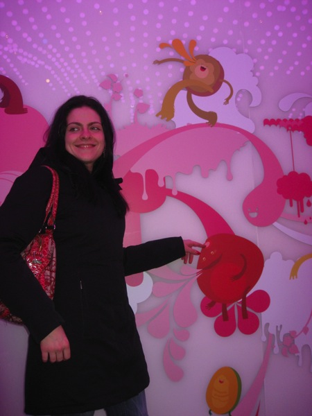
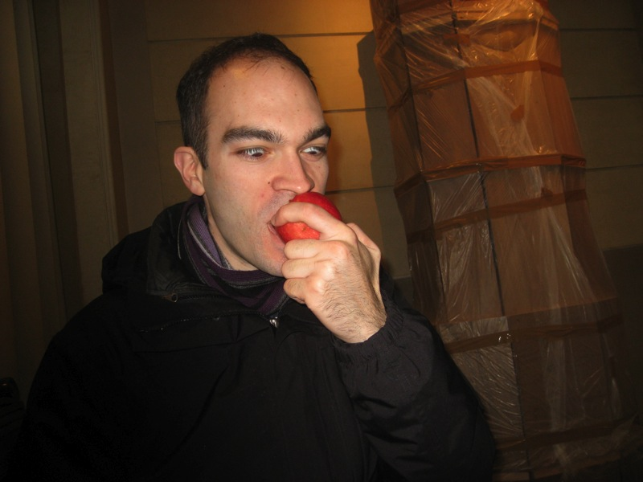
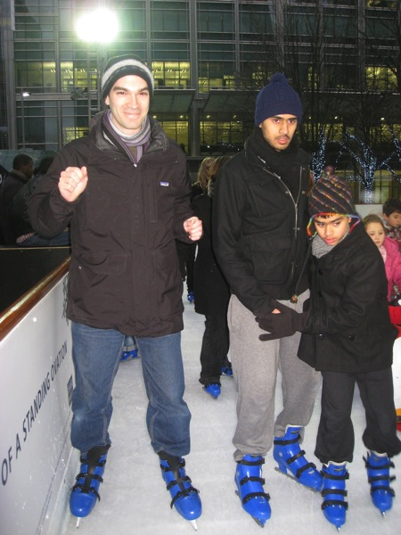
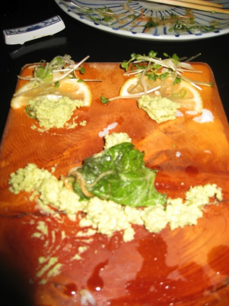
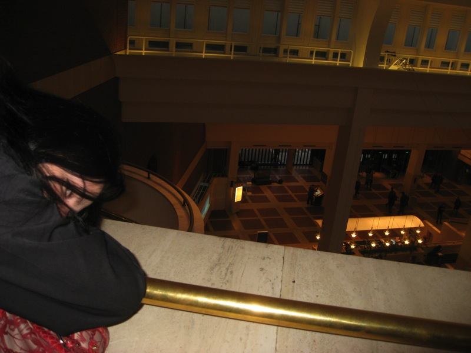

We arrived in London and had a mellow day figuring out the mass transit options (the buses and the "Tube"), what the area around our apartment had to offer, and some place to eat. I've been to London twice before, so I had no problem sticking to the healthier food that Aliona preferred. In this picture of Trafalgar Square, a massive doubledecker bus posed for a shot, complete with Twilight's Kristin Stewart, who many think Aliona resembles.
We stopped off at a geeky store, "Forbidden Planet", complete with menacing Sackboy action figures.
While posing in this typical London phone booth, Aliona was holding her breath. The scent was horrific.
I have nothing to do with the disgusting little ad posted next to me.
Big Ben, dark and ominous, looms in the distance. I like the word "loom", and if anything's going to loom, it's Big Ben.
The London "Eye" looms over the Thames River.
Aliona took a break from snacking on her stash of apples to pose on the Embankment Bridge.
We discovered there's a "champagne flight" option when riding the London Eye, which is just a fancy ferris wheel.
Of course we went for it. Here's our capsule "host" pouring the glasses for us shameless couples.
Up here you could see plenty of London, despite the typical clouds and light rain. Our host was quick to dampen our spirits and let us know we could have seen much more on a clear day.
Despite the rain, we certainly had a good view of all the pretty stuff in old London, especially Westminster.
Champagne hit the spot for a couple still fighting jetlag.
Speaking of which, we see this sign posted in the Tube station. That yellow dude likely has a bad liver anyway.
Aliona and I eat a lot of frozen yogurt in New York. I don't like the taste of yogurt that much, and the best yogurt spot in London, Snog, tasted way too yogurty for me.

The decorations in Snog were far more psychedelic than any froyo place I've seen.
We met up with a dude in the Brixton neighborhood (in London) at a fun bar/hostel hangout called Hootananny. I seriously could not recognize the gender of the middle backup singer.
At the Tower of London, I was trying to get a nice bird photo for what Aliona will readily confirm was way too long. However, I later realized a bird already showed up in this one. You probably have to pay them bread for a second photo.
There was ice-skating at the Tower of London. When we decided to go skating here later, the rink was gone and there was just a field of grass.
In my last visit to London, the city was overrun by these pidgeons. Due to time of year, these little they were few and far between, thankfully.
Aliona basking in the sun at the Tower of London, with the Tower Bridge in the background.

At certain times, the guards of the Tower march about ceremoniously. Despite their cartoonish appearance (maybe not as cartoonish as the Vatican guards), they carry serious weapons... I believe SA-80 assault rifles. This is why no one makes fun of their hats.
This warder did not want to pose for this picture. Upon request, he stopped and barked "Quick!" Meanwhile, Aliona was listening to the audioguide's gory description of medieval torture that took place in this castle.
A bird in hand is worth two in the cage... wait, that doesn't make sense. Well, the bird is really in the cage, so it's a moot point.
We had to take this picture before we were scolded. I'm sure Queen Elizabeth I would be fine with it.
Aliona armed herself well, just in case.
At this moment, we realized the Tower, along with its toilets were closed and we'd have to pay half a pound to use the ones outside.
We sustained ourselves with a continuous supply of Green & Black organic 85% dark chocolate, which we're both addicted to. I'm sure you needed to know that. In case you actually did, try 70% first.
As we walked along the Thames to Westminster abbey, many fine athletes ran past us, training for the London marathon I'm sure.
A feathery soul zones out.
While I had to admire this gorgeous monument to the brave soldiers who fought for their country, I had to fight off an inappropriate sense of jealousy.
And speaking of inappropriate...
Well, we were just having fun. Sorry Brits.
We treat ourselves to an authentically-crafted crepe.
Here we are at Westminster Abbey. You can't really see the abbey here, but Big Ben is right next to it, and Big Ben is a blatant camera whore.
Aliona attempts to see what's behind the oldest door in Great Britain.
Back at home (we rented a "holiday apartment"), we slowly acquired a stash of healthy cheaper food options in our fridge. There are a lot of foods in Europe that taste much more natural than their American counterparts. Especially the apple juice, in the carton to the bottom right.
We made our way to Buckingham Palace. I was going to crash the party, but even I was too short to climb this gate.
Plus, these guards also had SA-80 assault rifles.
Instead, we walked around the much more approachable Queens Garden with more hats to snicker at.
We were bought these marzipan treats from the palace gift shop and were disappointed they tasted nothing like the fruits they were shaped as.
This tastes nothing like an orange. Why did they bother making it look so realistic??

In my angst, I bit into a real apple. With Aliona around, my backpack was always stocked with apples.
I had to show Harrods to Aliona.. especially the toy department. In her excitement, I was promptly decorated.
Aliona feeds her finger to a little crocodile.
The resident safari took a liking to Aliona. Especially the little rhino on the left.
I told Aliona it was time to move on, and the rhino charged me.
We stuck around for another hour, waiting for this little lamb to finish its nap on Aliona's arm.
Me saluting alongside Captain Lego as I finally escaped.
Staffers were flying around all sorts of toys into customers' heads in an effort to have less people to deal with. They landed a helicopter on my head twice and this thing almost sawed my ear off.
Harrods has a frozen yogurt place of their own, "Yoo Moo". They had a few "yogurt sundaes" on the menu with "Yoo Moo" themed names. To my good fortune, the "Yoo-Messy-Moo" stuck as my nickname for the rest of the vacation.
A kitten flew into Aliona's hands, to give her one last smooch before we left the toy section.
Later that night we headed over to see a musical, "We Will Rock You", themed on Queen songs. We saw American Idiot (Green Day) recently which was amazing, so we were psyched.
Here was when everyone took a photo of the theater before we were told not to take photos. I can't say the musical was great. The plot was a fairly goofy Brave New World clone. (American Idiot had a solid plot)
However, I still enjoyed the music and the silly dancing.
Another day we attended this free lecture on "The Meaning of Life", a title admittedly stolen from Monty Python. The speaker was very articulate and had many slides with sensationalist headlines such as "Ending it all", so it was entertaining. However, I solidified my view of philosophy as being a fairly inconclusive exercise and decided to just appreciate the nuances of the British accent.
For most of the lecture, we were thinking of this nearby good-looking sushi joint. Many London sushi restaurants have conveyer belts with food on color-coded plates. When you're done eating, the color of your empty plates represent prices and, in turn, your bill.
I had a lot of hot chocolate in London. I like hot chocolate a lot, with or without marshmallows.

Our apartment was within a minute's walk of the British Museum. I had seen the British Museum fairly thoroughly before, and we weren't really in the mood for ancient history. However, since it was so close, we forced ourselves to see some of it. This is Aliona pretending to enjoy the museum.
We walked through like zombies, trying to see some of it.
Aliona likes skeletons, so she enjoyed some of it.
She called this cute.
After a nice curator described the origins of a collection of six artifacts to us, we decided to disengage thought and be goofy.
Aliona and I spent ten minutes trying unsuccessfully to hack into the British Museum's network.
I figured we should see the cool-looking Rosetta Stone before we left. The idea was, it made it easier to translate Egyptian hieroglyphics because the same text was written on this stone in three languages, including hieroglyphics and modern Greek.
The doubledecker buses were equipped with video monitoring systems. The on-board TVs rotate between 12 cameras around the bus. When it showed view #7, I took a picture of it showing me. I proceeded to wait for the next cycle and then take a picture of the camera. I wanted to see if the flash blinded everyone. Sadly, it just made the TV white for a couple milliseconds.
You can more easily see things high above the road when riding on the second floor of a doubledecker bus.
We were trying to get to this family-run "North Sea Fish Restaurant" which seemed to get rave reviews for its fish and chips. I went for the jumbo serving, deciding to keep my arteries on their toes. Aliona also wanted to try a couple of bites of the famed dish, but no more.

We like playing with our food at the end of the meal. This was Aliona's handywork alone though. She did this.
We made our way out to "The Vibe" to hear some psychedelic rock.
The second band's guitarists performed in front of the stage. Their distortion pedal was hooked up to trigger a strobe light, inducing epilepsy in their fans.
The next day, we forced ourselves to wake up early for a "Windsor Castle, Stonehenge, Oxford" tour. Windsor was a nice town, and just as interesting as the castle, especially with most of the interior (the State Apartments) temporarily closed.
We made the most of looking around at things from the outside. There's a structure over there! See?
Aliona takes in the glorious external view.
I'm pretty annoyed that the tour company did not inform us about the closure before the tour. Aliona contemplates revenge.
I get impatient and start blowing things up. That's what Americans are supposed to do, right?
I read a fictional book about Stonehenge, which inspired me to see Stonehenge. When I confessed to Aliona that I was more looking forward to Oxford, I was beaten for dragging her along to see a bunch of ugly rocks. We did both agree they looked cool though.
Also, there were lots of tiny little sheep near Stonehenge to amuse us. They apparently rent out some of the land near Stonehenge to help pay for maintenance.
Okay, the sheep weren't really that tiny. Here you can see the bluish paint on the sheep. They paint the underbellies of male sheep with different colors of paint, so they can find out who shagged who.
The weather was surprisingly good and relatively warm throughout most of our vacation. We passed through a few brief showers during transit though.
You can't look much more scholarly than Oxford does.
Creepy faces surround the building that hosts Oxford University graduation ceremonies.
In the ground outside the same building are stonecutter marks like these which directly inspired the scar on Harry Potter's forehead.
This is as close as I'll get to attending Oxford.
Especially after this incident.

Take a picture of this building and you instantly have an engaging photograph. I have to give myself some credit for the symmetry though.

Aliona enjoys the peaceful courtyard of one of the many Oxford colleges.
We found a way to give you a quick yet comprehensive view of one of these courtyards.
We stopped for coffee on the way back to the bus. This dude, probably the boyfriend of the barista, was taking a nap behind the counter. I asked about him, which resulted in a good laugh.
Not much to do on the bus ride back to London, so I decided to show off my experimental photography skills to Aliona.
This was created by twisting the camera strap and letting it spin while exposed to passing traffic. Unfortunately, it resulted in my camera strap breaking. I need a new one.
My experimental photography soon came to an end when I targeted Aliona's face. I think it looks cool though.
Sad puppy on the Tube.
We heard there was an ice sculpture competition at Canary Wharf. We took a couple hops on the tube and were immersed by an industrial yet serene watery haven.
Right off the bat, I'll show you the ice sculpture from Portugal that ended up winning.
The French really knew how to warm up a block of ice with the curves of a woman's naked backside.
Near the ice sculpture competition was another ice-skating rink. We did go to this one, and we went ice skating for the first time. Here's Aliona avoiding the girl sliding along with her penguin, designed to help kids maintain balance.

Look ma, no hands! Ma would actually be the first one to say I skated before, and she said exactly that. However, it was when I was very small and I did not actually succeed in "skating" once. When I wasn't clutching the rails, I flopped over instantly. Since then I've done rollerblading and skiing, so I'm sure that helped, and over the course of 40 minutes or so, I did not fall, despite many less fortunate adults and children who were bumping into me.
We revisited the ice sculptures afterward to see them lit in the dark.
My favorite was Africa's lion.

That night we had reservations for a sushi place in London with rave reviews. We got there 20 minutes early and they wouldn't seat us, so we were forced to stare at this creative picture for the whole time.

This time it was me who played with my food. Here's our leftover wasabi in the form of a smiley face. Aliona added the moustache and hairy/grassy eyebrows.
Along the Thames, I set a loose brick upon the arm of a bench. I set the camera on the brick and was able to take a decent photo at night.
In Covent Garden, this man drew a crowd of drunks with good songs such as Police's Every Breath You Take and Billy Joel's Piano Man.
Aliona imitates a doll with oversized-eyes.
We made our way to the British Library.
They had an exhibit on "English", including how it evolved, and what it is like today, with different accents and regional vocabularies. Here I found an old-fashion printing press they let me play with.
One thing we were saddened to have learned was that the although the library was certainly open on Sundays, the book collections are closed. The closest we got to books were taking highly zoomed in pictures of them through glass.

The British Museum was designed with an open, balcony-encircled lobby area.
I took this picture sideways to disorient you.
This table in one of the lobby's reading areas had these "seats".
Here we demonstrate their usage. They were quite comfortable to lay back and read in, and I think it would help me stay a bit more alert too.
Here we played with toys in a souvenir shop. These skeletons seemed made for the little plastic horses we put them on. In retrospect, they probably were. The skeletons are having a good time despite a lack of flesh.
We eat ramen at a Wagamama with a nice view of the Tower of London in the background, as you can see here. Okay, I know you can't, because it's dark. Please refer to prior pictures to see the Tower of London.
At the Tower of London, on our last night in London, we started a "Jack the Ripper" tour. This is the world's foremost expert on Jack the Ripper, so Aliona made sure we got his time slot. I told him Aliona was a student, so he informed me the student price was 200 pounds. Kidding of course. I later blasted Jack the Ripoff with my flash, which he immediately recognized as my revenge.
It was all in good fun though, and here we posed for a picture. We bought his book and he signed it, but I still can't decipher what he wrote to us in it.
In the Jack the Ripper-famed Ten Bells pub, Ten Bells, the killer's victims and possibly the killer himself were reported to have stopped in. The stairwell to the restroom is decorated with newspaper reports on the murders. As Aliona was finished with the toilet and walked up the stairs, I got in character.
All along there was a really nice cocktail bar right around the corner from our apartment. At least we discovered it on the last night. Here the bartender made us a pair of her finest spiced-mango mojitos.

As we prepared for our flight back across the pond, we watched both CNN and BBC on the tiny TV they gave us.
At Heathrow's duty free shops, something quite stunning are the warnings required on every box of cigarettes.
Not just "Smoking kills", but also other depressing messages.
Smoking is bad for you though. I'll be upset if you die from smoking.
Here we see the plane slated to fly us back to New York. If you look closely, you can see that yes, it does have a second wing.
Back